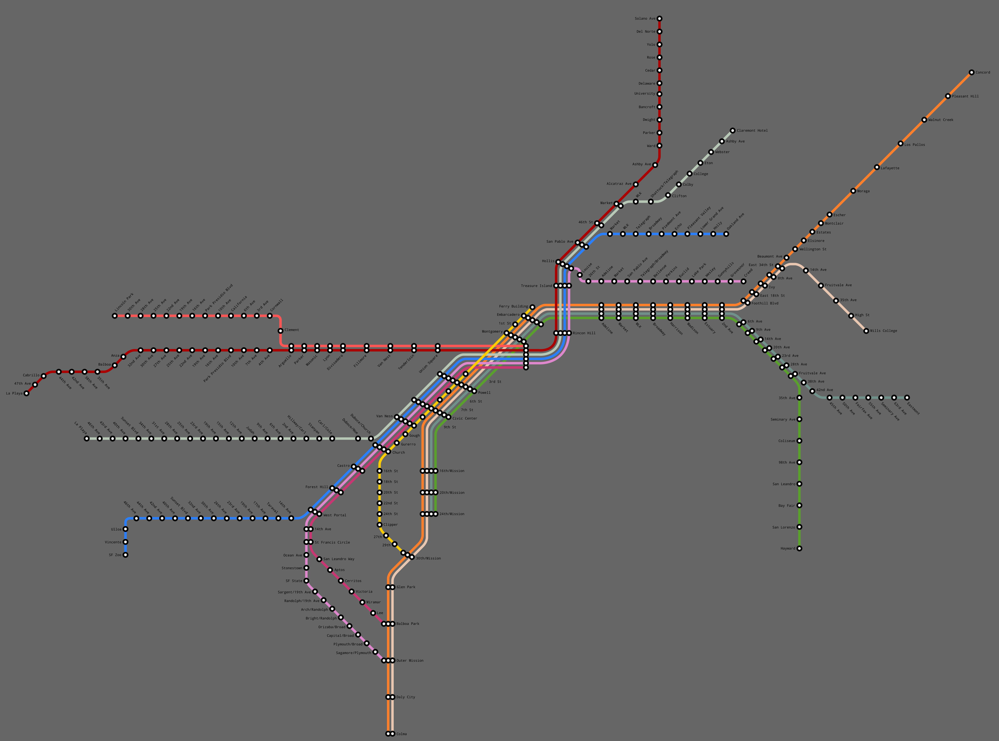

[svg]![[svg]](map.svg){kind=link}
In 1935, the Geary and Market St subways are constructed, so that most of the SFMTA's municipal downtown-facing lines survive the streetcar purges.
The Key System is successfully municipalized, and avoids its brutal execution by General Motors.
There is an effort to redevelop Muni/Key into a fully 100% grade-separated metro -- but the ballot measure fails in 1960, and the opportunity slips through. Key and Muni continue to operate as they always have until the mid 1980s.
By the 80s, light rail has made a comeback, and a ballot measure ploughs money into noveau light rail construction.
A transbay tube and Mission St subway are constructed, to replace the old A line. Notably, the section in Downtown Oakland is not moved underground. The Market St subway is hooked up to the Transbay Terminal to enable through-running. And newer, higher capacity vehicles are also used, with accessibility and more cars and generally revamped rights of way.
Additional extensions are slowly added, down the old Sacramento Northern or Southern Pacific rights of way east to Concord and south to Hayward, and down the median of I-580 through the East Oakland hills.
There are no surviving crosstown streetcars (buses + trolleybuses fill the void), and the state of commuter rail is unspecified (perhaps we imagine a rail hub at the Transbay Terminal and maybe Fruitvale/Oakland). This map leaves many particularities of Bay Area history unspecified, so use/merge whatever compatible headcanons from my other maps you want (or make your own). Though this system has approximately the same maximum capacity as BART, its character as light rail places constraints on its ability to grow.
This system is, in short, a synthesis of old school light rail and (high quality) new school light rail modes. Whether you prefer this alternate reality probably depends on where in particular you live, and I imagine Oakland and San Francisco have increased densities relative to now, especially along the streetcar lines. Still, it is something different.